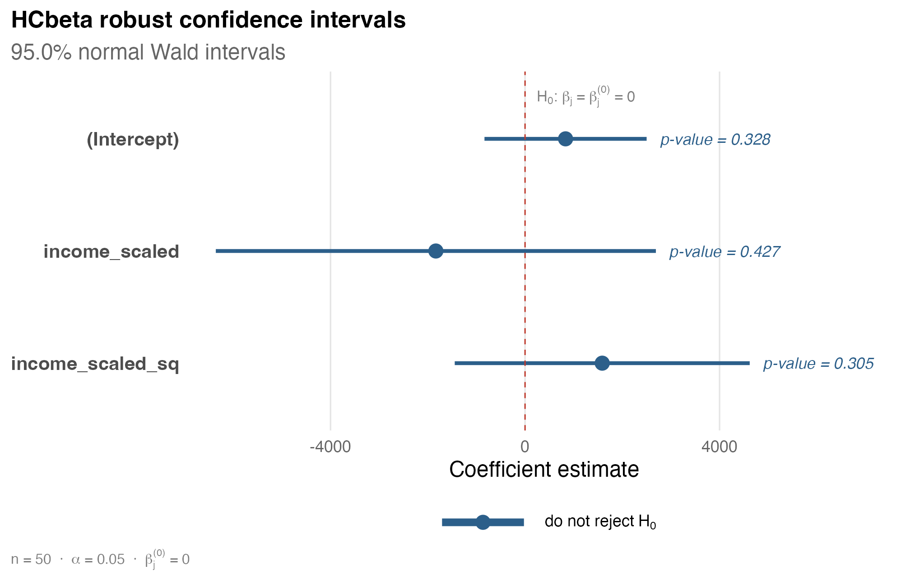

hcinfer computes heteroskedasticity-consistent covariance estimators and normal Wald inference for ordinary least squares models. The currently implemented covariance matrix estimators are listed below.
Implemented Estimators
The table below is generated by hc_methods() and lists the covariance matrix estimators currently implemented in hcinfer.
| type | label | description | default_arguments |
|---|---|---|---|
| hc0 | HC0 | White heteroskedasticity-consistent estimator. | none |
| hc1 | HC1 | HC0 with degrees-of-freedom scaling. | none |
| hc2 | HC2 | Leverage-adjusted estimator with exponent 1. | none |
| hc3 | HC3 | Leverage-adjusted estimator with exponent 2. | none |
| hc4 | HC4 | Adaptive leverage correction by Cribari-Neto. | none |
| hc4m | HC4m | Modified HC4 correction by Cribari-Neto and da Silva. | none |
| hc5 | HC5 | High-leverage correction by Cribari-Neto, Souza, and Vasconcellos. | k = 0.7 |
| hc5m | HC5m | Modified HC5 correction by Li, Zhang, Zhang, and Wang. | k = 0.7, k1 = 1, k2 = 0, k3 = 1, gamma1 = 1, gamma2 = 1.5 |
| hcbeta | HCbeta | Beta-distribution leverage correction. | c1 = 7, c2 = 0.75, lower = 0.01, upper = 0.99 |
Installation
# install.packages("hcinfer")
# Development version
remotes::install_github("prdm0/hcinfer")Basic Use
library(hcinfer)
schools <- PublicSchools
schools$income_scaled <- schools$income / 10000
schools$income_scaled_sq <- schools$income_scaled^2
fit <- lm(expenditure ~ income_scaled + income_scaled_sq, data = schools)
result <- hcinfer(fit)The default estimator is HCbeta. Use tests() and confint() to extract the main inferential quantities as tibbles.
tests(result)
#> # A tibble: 3 × 8
#> term estimate null_value std_error z_value p_value alpha reject
#> <chr> <dbl> <dbl> <dbl> <dbl> <dbl> <dbl> <lgl>
#> 1 (Intercept) 833. 0 851. 0.979 0.328 0.05 FALSE
#> 2 income_scaled -1834. 0 2309. -0.794 0.427 0.05 FALSE
#> 3 income_scaled_sq 1587. 0 1547. 1.03 0.305 0.05 FALSE
confint(result)
#> # A tibble: 3 × 4
#> term conf_low conf_high level
#> <chr> <dbl> <dbl> <dbl>
#> 1 (Intercept) -834. 2500. 0.95
#> 2 income_scaled -6359. 2691. 0.95
#> 3 income_scaled_sq -1446. 4620. 0.95Confidence Intervals
The plot() method displays the robust confidence intervals and marks the null value used in the tests.
plot(result)
Diagnostics
Use vcov_hc() when you only need the robust covariance matrix and its diagnostics. The plot() method for this object shows leverage values and HC adjustment factors.

Learn More
Start with vignette("introduction", package = "hcinfer") for a compact overview of the package API.
References
- White, H. (1980). A heteroskedasticity-consistent covariance matrix estimator and a direct test for heteroskedasticity. Econometrica, 48(4), 817-838.
- Cribari-Neto, F. (2004). Asymptotic inference under heteroskedasticity of unknown form. Computational Statistics and Data Analysis, 45(2), 215-233.
- Cribari-Neto, F., Cunha, M. O., and Marinho, P. R. D. (2025). HCbeta: A beta-distribution-based heteroskedasticity-consistent covariance estimator. Working paper.